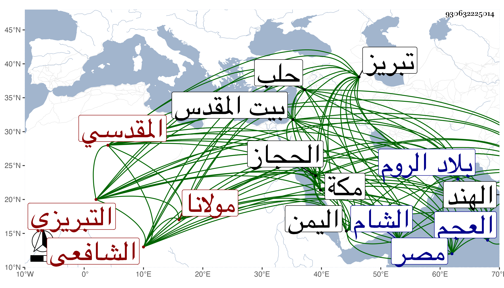

0902Sakhawi.DawLamic.ITO20230111-ara1.EIS1600.930632225014
Biography ID: 930632225014
1001
محمد بن أحمد بن حاجي مولانا شمس الدين التبريزي ثم المقدسي الشافعي ويعرف بابن عذيبة لملازمته العذبة . ولد قبيل سنة خمس وخمسين وسبعمائة بتبريز واشتغل قديما وارتحل إلى أقصى العجم والهند والروم واليمن والحجاز للتجارة مع اشتغاله بالفقه والعربية والصرف والقراءات ودخل مصر في زمن الأسنوي وحلب في زمن الأذرعي والشام في زمن ابن كثير وابن رافع وحضر عندهم وعند غيرهم وحصل كتبا جيدة ودخل القدس في سنة خمس وتسعين وعرف بالخواجا وجاور سنين بمكة قبل الفتنة . ذكره ابن أبي عذيبة وقال إنه به عرف وأنه قرأ عليه في العربية والتفسير والقراءات وجاور معه بمكة سنة أربع وثلاثين ، وكان أحد رجال الدهر كرما وديانة وتصوفا وتخشعا ومحبة في أهل العلم والخير وفضلا ذا نعمة طائلة وثروة مع سرقة كثير من ماله وغرفه . مات بمكة في المحرم سنة خمس وثلاثين بعد مرض طويل رحمه الله .
